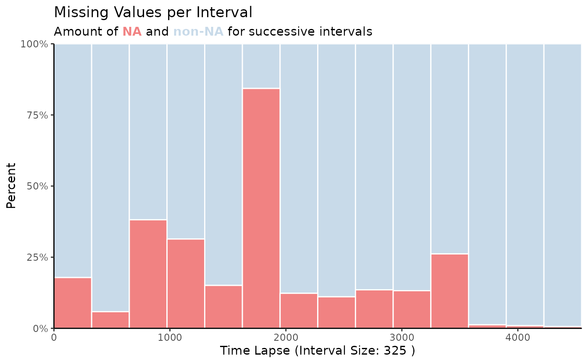
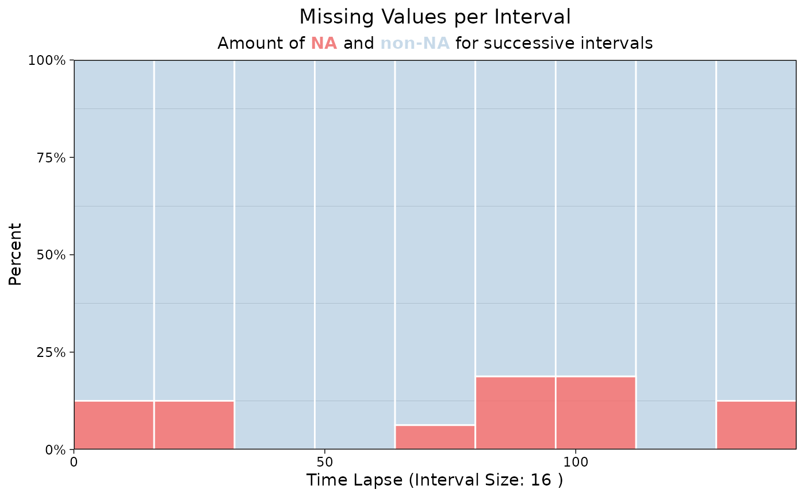
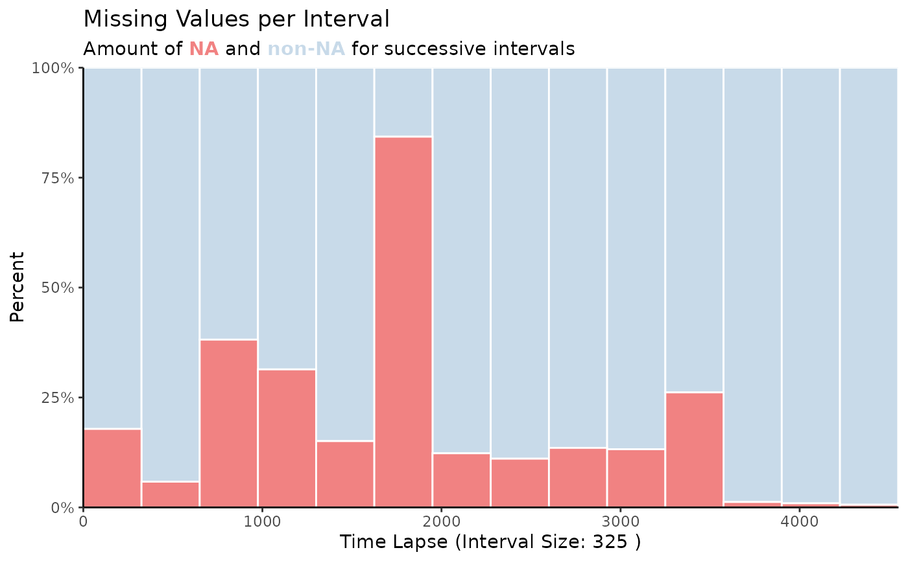
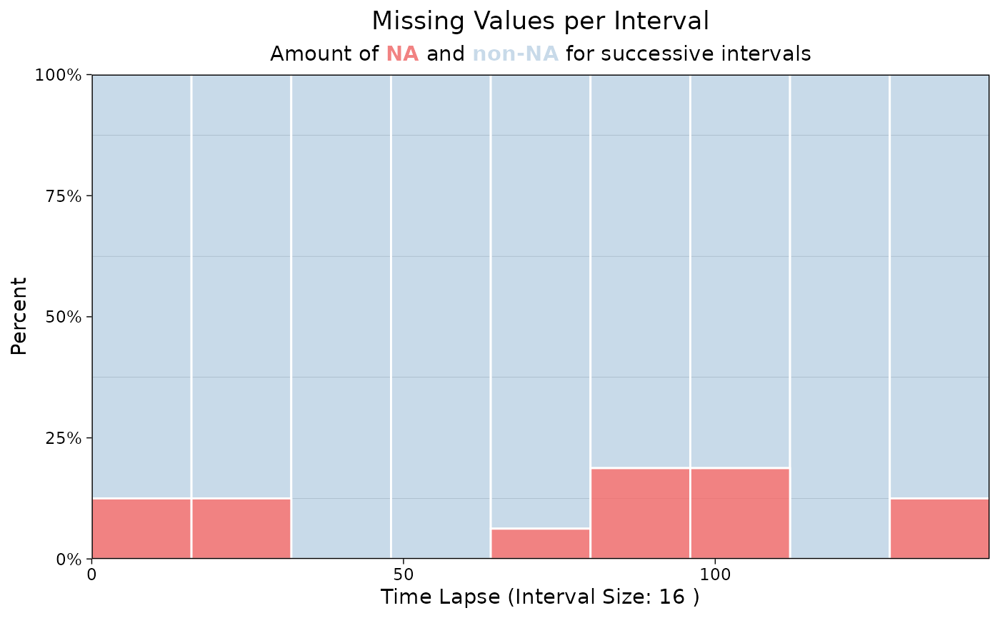

Stacked Barplot to Visualize Missing Values per Interval
Source:R/ggplot_na_distribution2.R
ggplot_na_distribution2.RdVisualization of missing values in barplot form. Especially useful when looking at specific intervals and for time series with a lot of observations.
ggplot_na_distribution2(
x,
number_intervals = NULL,
interval_size = NULL,
measure = "percent",
color_missing = "indianred2",
color_existing = "steelblue",
alpha_missing = 0.8,
alpha_existing = 0.3,
title = "Missing Values per Interval",
subtitle = "Amount of NA and non-NA for successive intervals",
xlab = "Time Lapse (Interval Size: XX)",
ylab = NULL,
color_border = "white",
theme = ggplot2::theme_linedraw()
)Arguments
- x
Numeric Vector (
vector) or Time Series (ts) object containing NAs. This is the only mandatory parameter - all other parameters are only needed for adjusting the plot appearance.- number_intervals
Defines the number of bins to be created. Default number of intervals (denoted by NULL) is calculated by
nclass.Sturgesusing Sturges' formula. If the interval_size parameter is set to a value different to NULL this parameter is ignored.- interval_size
Defines how many observations should be in one bin/interval. The required number of overall bins is afterwards calculated automatically. If used this parameter overwrites the number_intervals parameter. For a very long time series be sure to make the interval_size not extremely small, otherwise because of overplotting issues nothing can be seen until you also increase the plot width.
- measure
Whether the NA / non-NA ratio should be given as percent or absolute numbers.
"percent" - for percentages
"count" - for absolute numbers of NAs
- color_missing
Color for the amount of missing values.
- color_existing
Color for the amount of existing values.
- alpha_missing
Alpha (transparency) value for the missing values.
- alpha_existing
Alpha (transparency) value for the existing values.
- title
Title of the Plot (NULL for deactivating title).
- subtitle
Subtitle of the Plot (NULL for deactivating subtitle).
- xlab
Label for x-Axis. Automatically set to the current interval size, if no custom text is chosen.
- ylab
Label for y-Axis. As default (NULL), the axis is automatically set to either 'Percent' or 'Count' dependent on the settings of parameter
measure.- color_border
Color for the small borders between the intervals/bins. Default is 'white'.
- theme
Set a Theme for ggplot2. Default is ggplot2::theme_linedraw(). (
theme_linedraw)
Details
This function visualizes the distribution of missing values within
a time series. In comparison to the ggplot_na_distribution
function this is not done by plotting each observation of the time series
separately. Instead observations for time intervals are represented as
intervals/bins of multiple values. For these intervals information about
the amount of missing values are shown. This has the advantage, that also
for large time series a plot which is easy to overview can be created.
The only really needed parameter for this function is x (the univariate time series that shall be visualized). All other parameters are solely for altering the appearance of the plot.
As long as the input is univariate and numeric the function also takes data.frame, tibble, tsibble, zoo, xts as an input.
The plot can be adjusted to your needs via the function parameters. Additionally, for more complex adjustments, the output can also be adjusted via ggplot2 syntax. This is possible, since the output of the function is a ggplot2 object. Also take a look at the Examples to see how adjustments are made.
Examples
# Example 1: Visualize the missing values in tsNH4 time series as percentages
ggplot_na_distribution2(tsNH4)
# Example 2: Visualize the missing values in tsNH4 time series as counts
ggplot_na_distribution2(tsNH4, measure = "count")
# Example 3: Visualize the missing values in tsHeating time series
ggplot_na_distribution2(tsHeating)
# Example 4: Same as example 1, just written with pipe operator
tsNH4 %>% ggplot_na_distribution2()
 # Example 5: Visualize NAs in tsNH4 - exactly 8 intervals
ggplot_na_distribution2(tsNH4, number_intervals = 8)
# Example 6: Visualize NAs in tsNH4 - 300 observations per interval
ggplot_na_distribution2(tsNH4, interval_size = 300)
# Example 7: Visualize NAs in tsAirgap - different color for NAs
# Plot adjustments via ggplot_na_distribution2 function parameters
ggplot_na_distribution2(tsAirgap, color_missing = "pink")
# Example 8: Visualize NAs in tsNH4 - different theme
# Plot adjustments via ggplot_na_distribution2 function parameters
ggplot_na_distribution2(tsNH4, theme = ggplot2::theme_classic())

# Example 9: Visualize NAs in tsAirgap - title, subtitle in center
# Plot adjustments via ggplot2 syntax
ggplot_na_distribution2(tsAirgap) +
ggplot2::theme(plot.title = ggplot2::element_text(hjust = 0.5)) +
ggplot2::theme(plot.subtitle = ggtext::element_markdown(hjust = 0.5))

# Example 10: Visualize NAs in tsAirgap - title in center, no subtitle
# Plot adjustments via ggplot2 syntax and function parameters
ggplot_na_distribution2(tsAirgap, subtitle = NULL) +
ggplot2::theme(plot.title = ggplot2::element_text(hjust = 0.5))
# Example 11: Visualize NAs in tsAirgap - x-axis texts with angle
# Plot adjustments via ggplot2 syntax and function parameters
ggplot_na_distribution2(tsAirgap, color_missing = "grey") +
ggplot2::theme(axis.text.x = ggplot2::element_text(angle = 60, hjust = 1))
# Example 5: Visualize NAs in tsNH4 - exactly 8 intervals
ggplot_na_distribution2(tsNH4, number_intervals = 8)
# Example 6: Visualize NAs in tsNH4 - 300 observations per interval
ggplot_na_distribution2(tsNH4, interval_size = 300)
# Example 7: Visualize NAs in tsAirgap - different color for NAs
# Plot adjustments via ggplot_na_distribution2 function parameters
ggplot_na_distribution2(tsAirgap, color_missing = "pink")
# Example 8: Visualize NAs in tsNH4 - different theme
# Plot adjustments via ggplot_na_distribution2 function parameters
ggplot_na_distribution2(tsNH4, theme = ggplot2::theme_classic())

# Example 9: Visualize NAs in tsAirgap - title, subtitle in center
# Plot adjustments via ggplot2 syntax
ggplot_na_distribution2(tsAirgap) +
ggplot2::theme(plot.title = ggplot2::element_text(hjust = 0.5)) +
ggplot2::theme(plot.subtitle = ggtext::element_markdown(hjust = 0.5))

# Example 10: Visualize NAs in tsAirgap - title in center, no subtitle
# Plot adjustments via ggplot2 syntax and function parameters
ggplot_na_distribution2(tsAirgap, subtitle = NULL) +
ggplot2::theme(plot.title = ggplot2::element_text(hjust = 0.5))
# Example 11: Visualize NAs in tsAirgap - x-axis texts with angle
# Plot adjustments via ggplot2 syntax and function parameters
ggplot_na_distribution2(tsAirgap, color_missing = "grey") +
ggplot2::theme(axis.text.x = ggplot2::element_text(angle = 60, hjust = 1))